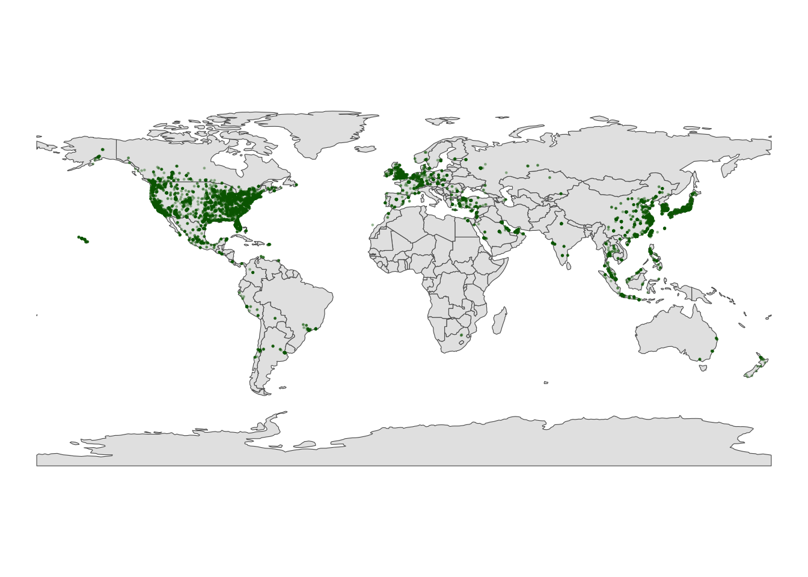
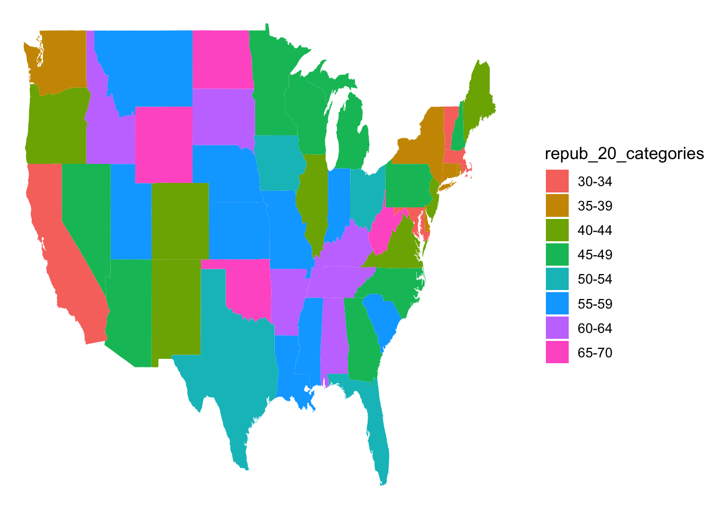
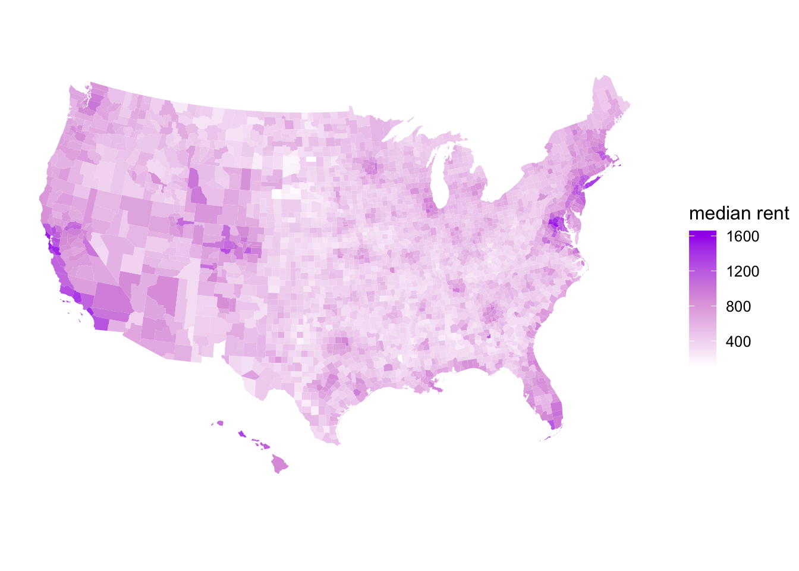

Spatial Viz
Load
6.4 Exercises
Exercise 1: A leaflet with markers / points
Code
latitude longitude
1 59 18
2 45 -93
3 33 -117
4 40 116
5 40 106
6 37 -122Part a
Code
Exercise 2: Details
Code
Code
# We can change the background
# Mark locations with yellow dots
# And connect the dots, in their order in the dataset, with green lines
# (These green lines don't mean anything here, but would if this were somebody's travel path!)
leaflet(data = fave_places) |>
addProviderTiles("USGS") |>
addCircles(weight = 10, opacity = 1, color = col2hex("yellow")) |>
addPolylines(
lng = ~longitude,
lat = ~latitude,
color = col2hex("green")
)Exercise 3: Your turn
Code
Part 2: Static points on a map
Learning to use ggplot() instead of leaflet().
Exercise 3: A simple scatterplot

Exercise 4: Adding a country-level background
Let’s add a background map of country-level boundaries.
Part a
Part b
Code

Code
# Load package needed to change map theme
library(mosaic)
# Add a point for each Starbucks
# NOTE: The Starbucks info is in our starbucks data, not world_boundaries
# How does this change how we use geom_point?!
ggplot(world_boundaries) +
geom_sf() +
geom_point(
data = starbucks,
aes(x = Longitude, y = Latitude),
alpha = 0.3, size = 0.2, color = "darkgreen"
) +
theme_map()
Part c Starbucks is largely popular in the United States and the majority of Europe. The eastern parts of Asia also seem to have a number of locations as well.
Exercise 5: Zooming in on some countries
Part a
Part b: Make the map!


Exercise 6: A state and county-level map
Part a Need two pieces of info to make this map: 1. Data on Starbucks for only the states of interest:
- A background map of state- and county- level boundaries in these states.
Code
Simple feature collection with 6 features and 1 field
Geometry type: MULTIPOLYGON
Dimension: XY
Bounding box: xmin: -96.81268 ymin: 45.05167 xmax: -93.01397 ymax: 48.53526
Geodetic CRS: +proj=longlat +ellps=clrk66 +no_defs +type=crs
ID geom
minnesota,aitkin minnesota,aitkin MULTIPOLYGON (((-93.03689 4...
minnesota,anoka minnesota,anoka MULTIPOLYGON (((-93.51817 4...
minnesota,becker minnesota,becker MULTIPOLYGON (((-95.14537 4...
minnesota,beltrami minnesota,beltrami MULTIPOLYGON (((-95.58655 4...
minnesota,benton minnesota,benton MULTIPOLYGON (((-93.77027 4...
minnesota,big stone minnesota,big stone MULTIPOLYGON (((-96.10794 4...Part b

Exercise 7: Contour maps
Code

Part 3: Choropleth maps
Spatial data isn’t always in the form of point locations - ex: the state and county-level data on presidential elections.
Code
# Don't worry about the code!
elections_by_state <- elections_by_state |>
filter(state_abbr != "DC") |>
select(state_name, state_abbr, repub_pct_20) |>
mutate(repub_20_categories =
cut(repub_pct_20,
breaks = seq(30, 70, by = 5),
labels = c("30-34", "35-39", "40-44", "45-49",
"50-54", "55-59", "60-64", "65-70"),
include.lowest = TRUE))
elections_by_counties <- elections_by_counties |>
select(state_name, state_abbr, county_name, county_fips,
repub_pct_20, median_age, median_rent) |>
mutate(repub_20_categories =
cut(repub_pct_20,
breaks = seq(0, 100, by = 10),
labels = c("0-9", "10-19", "20-29", "30-39", "40-49",
"50-59", "60-69", "70-79", "80-89", "90-100"),
include.lowest = TRUE))Exercise 8: State-level choropleth maps
Let’s map the 2020 Republican support in each state, repub_pct_20.
Part a Need 2 pieces of info: 1. Data on elections in each state: elections_by_state 2. A background map of state boundaries in the US.
Code
long lat group order region subregion
1 -87.46201 30.38968 1 1 alabama <NA>
2 -87.48493 30.37249 1 2 alabama <NA>
3 -87.52503 30.37249 1 3 alabama <NA>
4 -87.53076 30.33239 1 4 alabama <NA>
5 -87.57087 30.32665 1 5 alabama <NA>
6 -87.58806 30.32665 1 6 alabama <NA>Important detail: Note that the region variable in states_map, and the state_name variable in elections_by_state both label states by the full name in lower case letters. This is critical to the background map and our data being able to communicate.
long lat group order region subregion
1 -87.46201 30.38968 1 1 alabama <NA>
2 -87.48493 30.37249 1 2 alabama <NA>
3 -87.52503 30.37249 1 3 alabama <NA>
4 -87.53076 30.33239 1 4 alabama <NA>
5 -87.57087 30.32665 1 5 alabama <NA>
6 -87.58806 30.32665 1 6 alabama <NA> state_name state_abbr repub_pct_20 repub_20_categories
1 alabama AL 62.03 60-64
2 arkansas AR 62.40 60-64
3 arizona AZ 49.06 45-49
4 california CA 34.33 30-34
5 colorado CO 41.90 40-44
6 connecticut CT 39.21 35-39Part b - map repub_pct_20 by state
Code

Code
# Make it nicer!
ggplot(elections_by_state, aes(map_id = state_name, fill = repub_pct_20)) +
geom_map(map = states_map) +
expand_limits(x = states_map$long, y = states_map$lat) +
theme_map() +
scale_fill_gradientn(name = "% Republican", colors = c("blue", "purple", "red"), values = scales::rescale(seq(0, 100, by = 5)))
It’s not easy to get fine control over the color scale for the quantitative repub_pct_20 variable. Instead, let’s plot the discretized version, repub_20_categories:
Code

Code
# Load package needed for refining color palette
library(RColorBrewer)
# Now fix the colors
ggplot(elections_by_state, aes(map_id = state_name, fill = repub_20_categories)) +
geom_map(map = states_map) +
expand_limits(x = states_map$long, y = states_map$lat) +
theme_map() +
scale_fill_manual(values = rev(brewer.pal(8, "RdBu")), name = "% Republican")
Part c
Code
# Get only the starbucks data from the US
starbucks_us <- starbucks |>
filter(Country == "US")
# Map it
ggplot(elections_by_state, aes(map_id = state_name, fill = repub_20_categories)) +
geom_map(map = states_map) +
geom_point(
data = starbucks_us,
aes(x = Longitude, y = Latitude),
size = 0.05,
alpha = 0.2,
inherit.aes = FALSE
) +
expand_limits(x = states_map$long, y = states_map$lat) +
theme_map() +
scale_fill_manual(values = rev(brewer.pal(8, "RdBu")), name = "% Republican")
Details: - map_id is a required aesthetic for geom_map(). - It specifies which variable in our dataset indicates the region (here state_name). - It connects this variable (state_name) to the region variable in our mapping background (states_map). These variables must have the same possible outcomes in order to be matched up (alabama, alaska, arizona,…). - expand_limits() assures that the map covers the entire area it’s supposed to, by pulling longitudes and latitudes from the states_map.
Part d We use geom_map() instead of geom_sf() for choropleth maps. (sf is for point maps)
Exercise 9: County-level choropleth maps
Time to map the 2020 Republican support in each county.
Part a Need two pieces of info: 1. Data on elections in each county (elections_by_county) 2. A background map of county, boundaries in the US, stored in the county_map dataset in the socviz package:
Code
long lat order hole piece group id
1 1225889 -1275020 1 FALSE 1 0500000US01001.1 01001
2 1235324 -1274008 2 FALSE 1 0500000US01001.1 01001
3 1244873 -1272331 3 FALSE 1 0500000US01001.1 01001
4 1244129 -1267515 4 FALSE 1 0500000US01001.1 01001
5 1272010 -1262889 5 FALSE 1 0500000US01001.1 01001
6 1276797 -1295514 6 FALSE 1 0500000US01001.1 01001Code
# Add 0's at the beginning of any fips_code that's fewer than 5 numbers long
# Don't worry about the syntax
elections_by_counties <- elections_by_counties |>
mutate(county_fips = as.character(county_fips)) |>
mutate(county_fips =
ifelse(nchar(county_fips) == 4, paste0("0", county_fips), county_fips))Part b
Code
ggplot(elections_by_counties, aes(map_id = county_fips, fill = repub_20_categories)) +
geom_map(map = county_map) +
scale_fill_manual(values = rev(brewer.pal(10, "RdBu")), name = "% Republican") +
expand_limits(x = county_map$long, y = county_map$lat) +
theme_map() +
theme(legend.position = "right") +
coord_equal()
Exercise 10: Play around!
Code
ggplot(elections_by_counties, aes(map_id = county_fips, fill = median_rent)) +
geom_map(map = county_map) +
expand_limits(x = county_map$long, y = county_map$lat) +
theme_map() +
theme(legend.position = "right") +
coord_equal() +
scale_fill_gradientn(name = "median rent", colors = c("white", "plum", "purple"))